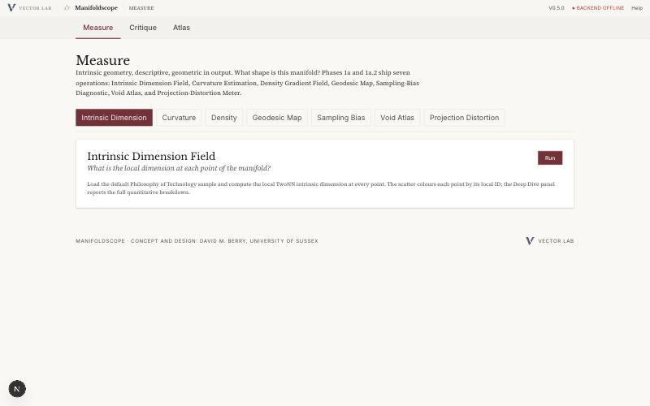
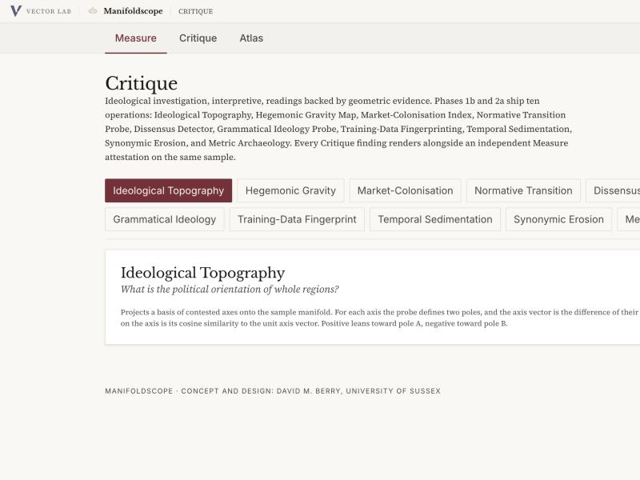
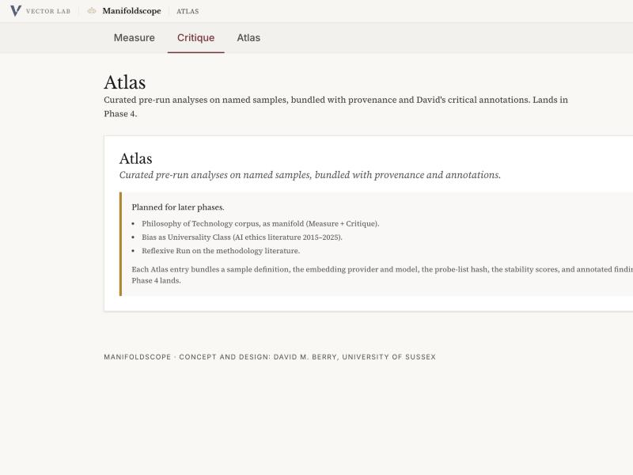

What it does
Manifoldscope loads a single embedding manifold — the output vectors of one model under one sample — and runs two kinds of operation against it. Every finding carries a provenance record (manifold source, sample, metric, projection, probe list, parameters) so that results can be reproduced and cited.
Geometry
Intrinsic dimension, Forman-Ricci curvature, density gradient, geodesic map, sampling-bias, persistent homology, projection-distortion grid.
Ideology
Ideological topography, hegemonic gravity, market colonisation, normative transition, dissensus detector, grammatical ideology, training-data fingerprinting, temporal sedimentation, synonymic erosion, metric archaeology.
Curated runs
Pre-computed analyses on named samples, bundled with provenance and annotations. Ships in Phase 4.
Screenshots



Install
Prerequisites
- Python 3.11+ for the FastAPI backend.
- Node.js 18+ (20 LTS recommended) and npm.
- Git, to clone the repository.
- For the default local embedder, nothing further: Manifoldscope ships with
sentence-transformersand runs MiniLM out of the box. For other providers see API Keys.
Clone and install
git clone https://github.com/vector-lab-tools/manifoldscope.git
cd manifoldscope
npm install
cd backend
./setup.shsetup.sh creates backend/.venv and installs FastAPI, scikit-learn, numpy, scipy, networkx, ripser, and the rest.
Run
Backend, in one terminal:
cd backend
source .venv/bin/activate
uvicorn main:app --reload --port 8000Frontend, in a second terminal:
npm run devOpen http://localhost:3000. The default sample (Philosophy of Technology concept list) loads automatically. Click Measure → Intrinsic Dimension → Run for a first result.
curl http://localhost:8000/health.
Use
A first run
- Open localhost:3000. The sample loader at the top picks the default Philosophy of Technology concept list.
- Stay on the Measure tab, with Intrinsic Dimension selected.
- Click Run. The backend embeds the sample under the configured provider, estimates per-point TwoNN local dimension, and streams the result back as NDJSON. The scatter colours each concept by its local dimension; the Deep Dive panel reports the quantitative breakdown.
- Switch to Critique, pick Ideological Topography, and run again. The result renders alongside the Measure attestation that was computed on the same sample.
Swap the sample
The sample loader accepts a concept list (plain text, one concept per line), a Zotero export, a Vectorscope hidden-state export, or a Theoryscope corpus-map import. Every operation records which sample it ran against; two runs on different samples never share a provenance record.
Swap the provider
The default is a local sentence-transformers model (no key, no quota). To switch to a hosted embedding model, you need an API key. The next section is the detailed guide.
API keys
Hosted embedding providers all work the same way at a high level: register, create a key, paste the key into Manifoldscope's provider settings, pick a model. The details differ enough per provider that this section walks each one.
localhost:3000 removes them.
sentence-transformers embedder enabled by default. The provider settings panel for hosted keys lands with Phase 2b (v0.4.x) alongside the subaltern-geometry probes. The procedures below are correct for key creation now; the in-app paste step unlocks when 2b lands. In the meantime you can experiment with Ollama (also detailed below), which needs no key.
OpenAI Paid, no free tier
Best for: text-embedding-3-large (3072 dims) and text-embedding-3-small (1536 dims).
- Go to platform.openai.com/signup and create an account (separate from a ChatGPT account).
- Add a payment method at Billing → Payment methods. OpenAI will not issue embedding calls without one, even for small test runs.
- Open platform.openai.com/api-keys, click Create new secret key, name it
manifoldscope, and copy thesk-...value immediately — it is shown only once. - In Manifoldscope, open Settings → Providers → OpenAI, paste the key, pick a model, click Save.
Cost sanity check. text-embedding-3-small is $0.02 / 1M tokens; a 5,000-concept sample at ~10 tokens per concept is under one US cent. text-embedding-3-large is $0.13 / 1M tokens.
Voyage AI Free tier
Best for: voyage-3-large (research-grade retrieval embeddings; 1024 dims).
- Register at dash.voyageai.com.
- Confirm the email, then open API Keys in the dashboard sidebar.
- Click Create new secret key; copy the
pa-...value. - In Manifoldscope, open Settings → Providers → Voyage, paste the key, pick
voyage-3-large(orvoyage-3for a smaller model).
Voyage currently offers 50M tokens free per month across all keys. The dashboard shows live usage.
Google (AI Studio) Free tier
Best for: gemini-embedding-001 (3072 dims, Matryoshka-truncatable). Use Google AI Studio, not Vertex AI — Vertex needs a GCP project, billing, and service-account credentials, which is heavier than Manifoldscope needs.
- Sign in to aistudio.google.com with a Google account.
- Click the Get API key button (top left).
- Pick Create API key in new project. Google creates a hidden GCP project in the background; you never need to touch it.
- Copy the key. It starts
AIza.... - In Manifoldscope, open Settings → Providers → Google, paste the key, pick
gemini-embedding-001.
Watch out. The key is tied to a GCP project in the background; if you later see "API key not valid", the project was auto-deleted for inactivity. Create a new key.
Cohere Free tier (trial key)
Best for: embed-english-v3.0 (1024 dims) or embed-multilingual-v3.0.
- Register at dashboard.cohere.com.
- In the dashboard, open API Keys.
- The default key is a Trial key, rate-limited and non-commercial. For higher throughput, create a Production key (requires a payment method).
- Copy the key. In Manifoldscope, open Settings → Providers → Cohere, paste it, pick a model.
Cohere needs an input_type per call. Manifoldscope sends search_document for the sample and search_query for Critique probes.
HuggingFace Free (serverless)
Best for: any sentence-transformers model hosted on the Hub via the Inference API — e.g. intfloat/multilingual-e5-large-instruct, BAAI/bge-m3, nomic-ai/nomic-embed-text-v1.5.
- Register at huggingface.co/join.
- Go to Settings → Access Tokens.
- Click New token. Give it a name (
manifoldscope), scope Read. Copy thehf_...value. - In Manifoldscope, open Settings → Providers → HuggingFace, paste the token, enter the model id (e.g.
BAAI/bge-m3).
Watch out. The free Inference API cold-starts a model on first request; the first call for a given model can take 30–60 seconds. Subsequent calls are fast. If a cold start times out, re-run — the model is now warm.
Ollama Local, no key
Best for: offline work, air-gapped machines, and avoiding provider quotas entirely. Models run on your own CPU or GPU.
- Install Ollama from ollama.com/download.
- Pull an embedding model:
ollama pull nomic-embed-text(768 dims) orollama pull mxbai-embed-large(1024 dims). - Confirm Ollama is listening:
curl http://localhost:11434/api/tagsshould return the model list. - In Manifoldscope, open Settings → Providers → Ollama, leave the key blank, enter the model name.
Ollama is also the recommended way to run Manifoldscope without any external network dependency — the whole pipeline (sample → embedding → geometry → probes) stays on the laptop.
sentence-transformers (built-in) Local, no key
Default. Nothing to configure; the backend ships with sentence-transformers/all-MiniLM-L6-v2 (384 dims). First run downloads the model (~90 MB) to ~/.cache/huggingface/.
To switch model, edit backend/embed/sentence_transformers.py and change MODEL_ID. Any sentence-transformers model on the Hub works.
Which provider for which operation
- Measure operations work with any provider. For reproducible, open-weight geometry, prefer sentence-transformers or Ollama.
- Critique operations that bind geometry to training provenance (Training-Data Fingerprinting, Synonymic Erosion, Metric Archaeology) prefer open-weight backbones so that model internals can be inspected. The commercial APIs will run them, but the archaeological reading is weaker.
- Metric Archaeology needs two embedders at once; MiniLM and MPNet are the defaults.
Examples
1. A philosophy-of-technology sample under OpenAI vs MiniLM
- Load the default sample.
- Configure OpenAI as above. Run Measure → Intrinsic Dimension; note the mean local ID.
- Switch to the built-in sentence-transformers provider. Run the same operation again.
- Open Measure → Metric Archaeology. The two embedders Procrustes-align with a quantified residual; the Jaccard overlap of each concept's k-NN tells you where the two models disagree about who neighbours whom.
2. Ideology under a known axis
- Open Critique → Ideological Topography. The default probe gives five contested axes (freedom/control, labour/capital, nature/culture, individual/collective, universal/particular).
- Run against the Philosophy of Technology sample. Each concept is scored on each axis; the heatmap colours each region by its net lean.
- The Measure attestation card next to the result shows the intrinsic dimension and curvature of the same sample under the same embedder, so you can read the ideological pattern against the geometric one.
3. Market colonisation of a technical vocabulary
- Switch to a sample of your own — e.g. an export from your Zotero collection of AI-ethics abstracts.
- Open Critique → Market-Colonisation Index. The probe lists market vocabulary (customer, product, market, return, asset, liability, ...).
- The gradient field shows how market vocabulary is spatially distributed across your sample's manifold; the per-concept score ranks which of your concepts have been pulled closest to the market pole.
Troubleshooting
"Backend offline" in the header
The frontend cannot reach http://localhost:8000. Check the backend terminal, then curl http://localhost:8000/health. If the backend is running on a different host or port, set MANIFOLDSCOPE_BACKEND_URL before npm run dev.
"ModuleNotFoundError: No module named 'ripser'"
Ripser needs a working C compiler. On macOS: xcode-select --install. On Debian/Ubuntu: apt install build-essential. Then re-run ./setup.sh.
OpenAI returns 429 even on the first call
You added a payment method but the account's spend cap is zero. Open Billing → Limits and raise it. New accounts default to $0 until a limit is set.
HuggingFace times out
Cold start. Re-run; the second call lands on a warm instance. If the model is routinely cold, pick a more popular one (e.g. sentence-transformers/all-MiniLM-L6-v2) or switch to Ollama.
Google key suddenly stops working
The hidden GCP project the key was pinned to was reaped. Create a new key at AI Studio and paste it over the old one.
The Run button is disabled
No sample loaded or no provider configured. The status bar at the bottom of the window reports which of the two is missing.
Sibling instruments
Manifoldscope is one of five tools in the Vector Lab family. They share an editorial design system, an open-weight-friendly methodology, and a provenance plumbing pattern, and differ in their object:
- Vectorscope — internals of a single open-weight model (hidden states, attention, residual stream).
- Manifold Atlas — comparison of output geometries across many models.
- Theoryscope — the geometry of a corpus of theoretical texts.
- LLMbench — the surface of model outputs read as prose.
See the Vector Lab overview for the map of how they fit together.
Licence & attribution
Manifoldscope is licensed under the GNU General Public License, version 3 or (at your option) any later version (GPL-3.0-or-later). Earlier versions (0.1–0.4.1) were distributed under the MIT Licence; as sole copyright holder, David M. Berry has relicensed all prior versions under GPL-3.0-or-later. Copies obtained under the earlier MIT terms remain valid under those terms.
Concept and design: David M. Berry, University of Sussex. Implementation with Claude Code.